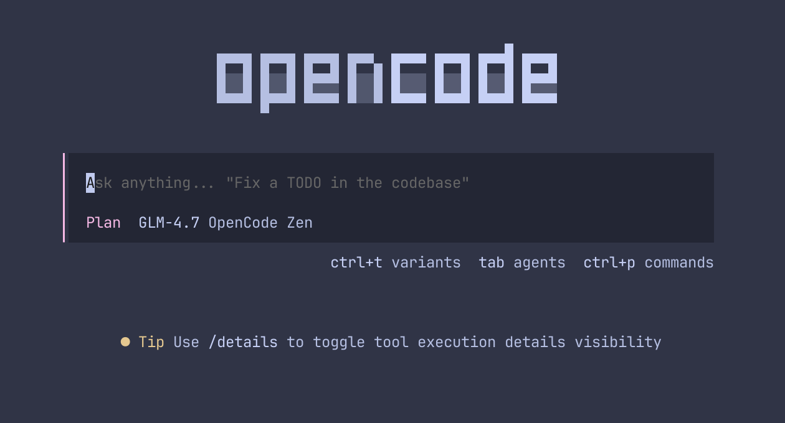
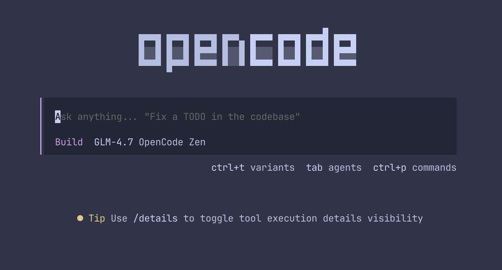

第七章：实战技巧 —— 掌控智能体
掌握 OpenCode 的核心不是写出完美的代码，而是学会如何高效地与它协作。以下是每个高级用户必须掌握的技巧。
1. 核心工作流：先思考，后执行
OpenCode 提供两个内置 agent，通过 Tab 键快速切换：

plan agent (只读规划)
build agent (默认执行)- plan agent (建议优先使用)：在此模式下，OpenCode 无法修改文件。它会分析你的需求，给出一份详尽的执行计划。你可以对计划提出质疑、修改细节，直到满意。
- build agent：在此模式下，OpenCode 会获得文件写入权限，开始真正地修改代码、运行命令。
技巧： 对于大型功能，先在 plan agent
下讨论清楚。一旦达成一致，切换到 build agent 并说：“Sounds good! Go
ahead.”
2. 精准提供上下文 (@ 符号)
不要指望 AI 自动猜到你要修改哪个文件。使用 @ 符号可以触发模糊搜索，将特定的文件、文件夹甚至是整个模块作为上下文传递给 AI。
示例："参考 @auth.ts 里的逻辑，在 @settings.ts 里实现同样的功能。"
3. 撤销与回溯 (/undo)
如果 OpenCode 的修改不符合预期，千万不要手动一个个文件去改回。使用
/undo 命令可以一键回滚。你可以连续运行多次
/undo 来回退到之前的任何状态。
4. 图片识别 (视觉能力)
如果你有一个 UI 需求，直接把截图拖进终端！OpenCode 可以分析图片的布局、颜色，并将其转化为代码。这在还原设计稿时非常高效。
常用命令速查表
| 命令 | 描述 |
|---|---|
| /init | 初始化当前项目 (生成 AGENTS.md) |
| /connect | 配置模型提供商 |
| /models | 查看并切换当前可用模型 |
| /undo | 撤销上一次代码变更 |
| /redo | 重做刚刚撤销的修改 |
| /share | 生成并分享当前会话链接 |